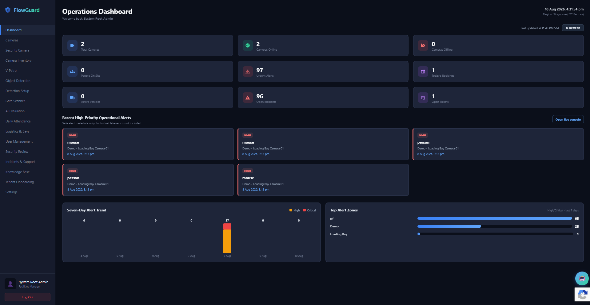
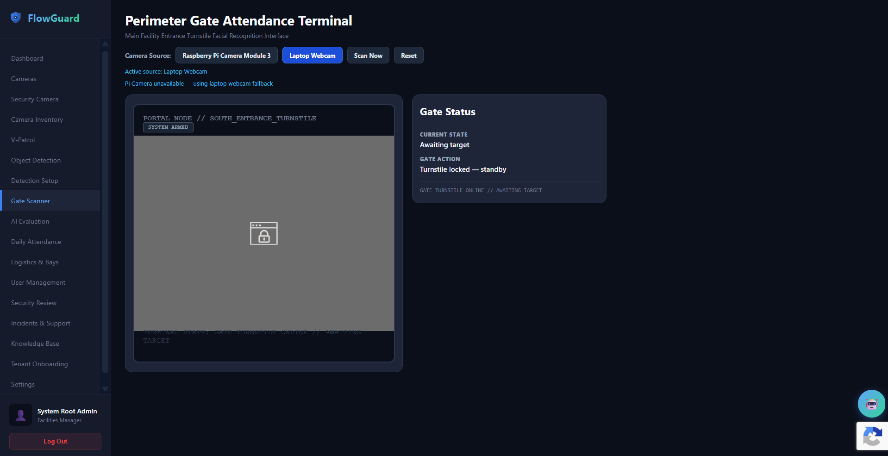
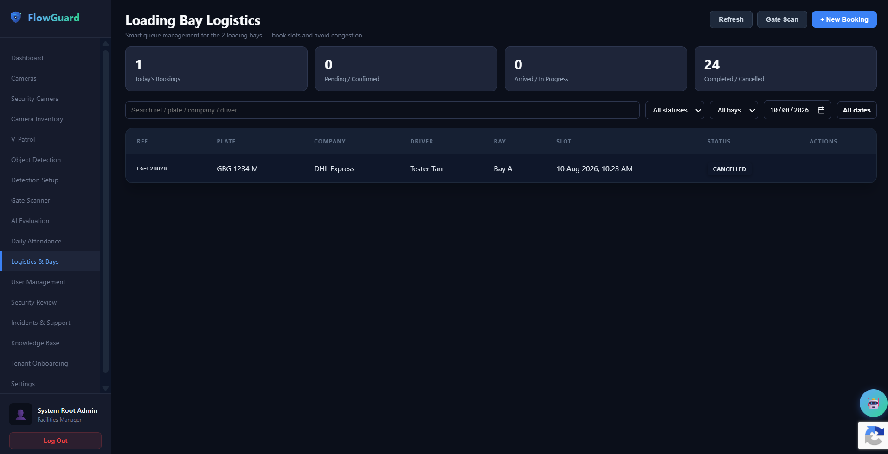
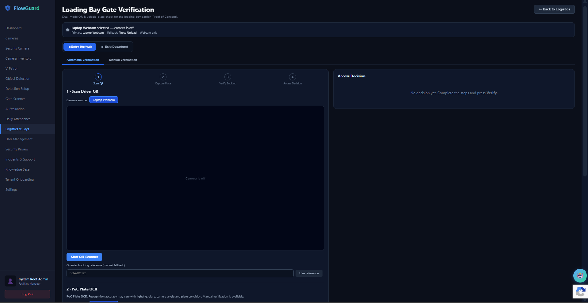
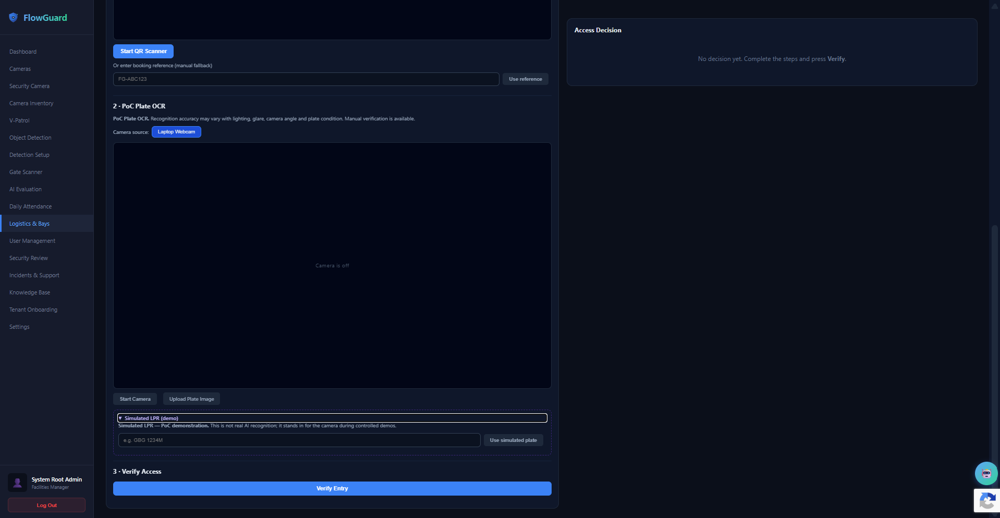
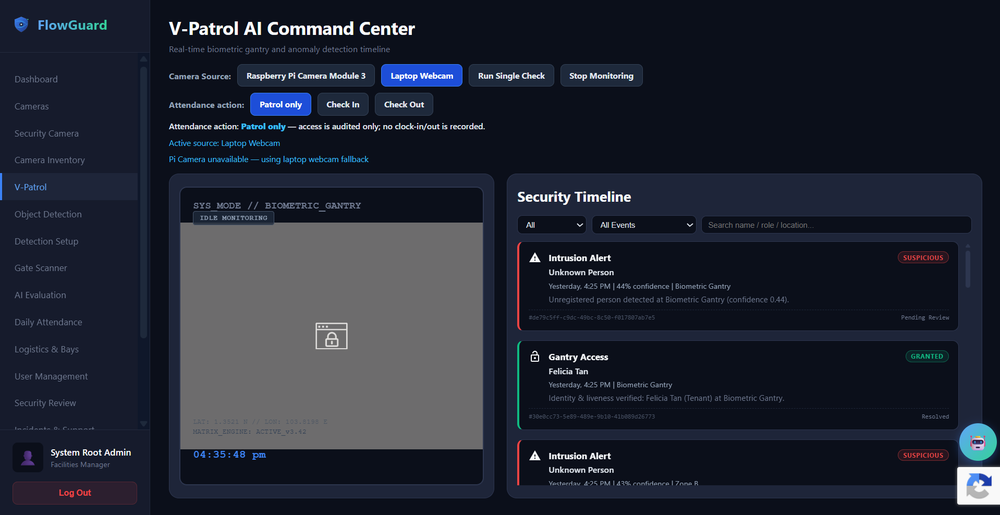
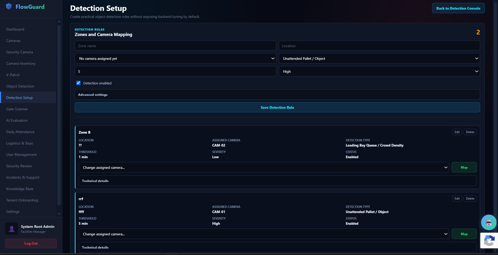
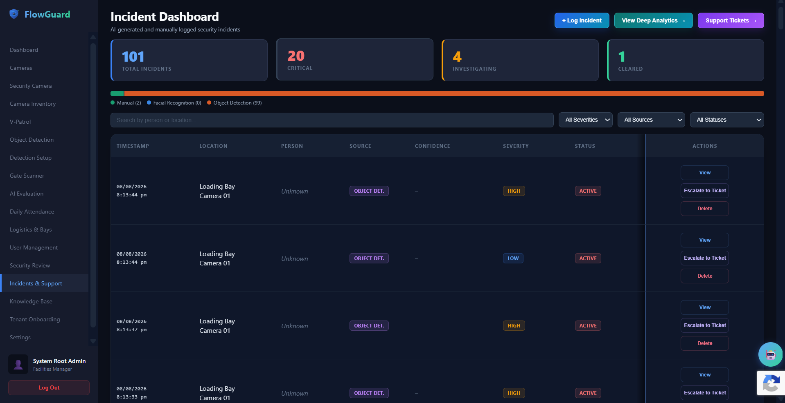

FlowGuard is a team-built smart facility operations platform designed for a food and manufacturing environment. It connects security monitoring, access control, incident response and loading-bay operations, helping facilities and security teams manage day-to-day work with less manual coordination. The project began as an AI-assisted surveillance concept and evolved into a broader full-stack platform spanning facial recognition, smart logistics, incident workflows, edge/IoT integration and cloud deployment.
Solution & Key Capabilities
FlowGuard developed into an integrated operations platform connecting AI-assisted monitoring, physical access workflows, logistics and incident response.
AI Security Monitoring: Camera and monitoring-zone workflows support people, object and unattended-item monitoring, with events surfaced for operational review.
Facial Recognition & Access: Gate Scanner, identity and attendance workflows support camera-based access and workforce verification.
Smart Logistics: Loading-bay booking and gate workflows coordinate drivers, vehicles and limited shared bay capacity.
Incident Response: Security and incident-management workflows support alert review, status tracking and analytics.
Edge & Cloud Integration: Web and cloud services connect with Raspberry Pi and edge hardware for on-site monitoring and operations.
flowguard-operations-dashboard.png








My Contribution
Within the team-built platform, my contribution areas included:
Facial Recognition & Access Control: facial-recognition integration, Gate Scanner, identity and facial workflows, and attendance/access integration.
Smart Logistics: loading-bay booking workflows, driver and gate access flows, QR-based gate verification, vehicle plate OCR integration, and frontend/backend integration.
Full-Stack Integration: React integration with backend APIs, role-aware workflows, and connections between system modules.
Deployment & Validation: staging and deployment integration, containerised cloud hosting, and deployment/integration validation.